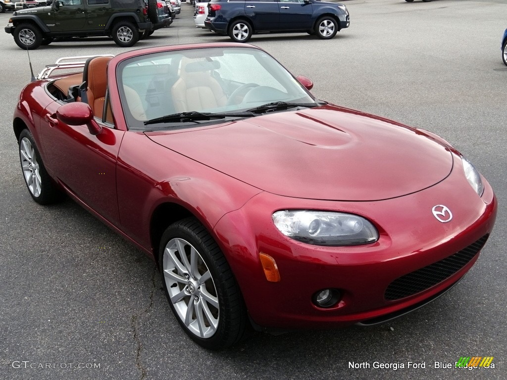

Hello everyone! Buying a car from Copart can be a great way to get a really cool car on a tight budget. With a little work, you could be driving in a Masda Miata or Subaru Baja - 2 of my top picks! Read more to find out about all about them.
As per Wikipedia ,the Mazda MX-5 is a lightweight two-passenger sports car manufactured and marketed by Mazda with a front mid-engine, rear-wheel-drive layout. The convertible is marketed as the Mazda Roadster (マツダ・ロードスター, Matsuda Rōdosutā) or Eunos Roadster (ユーノス・ロードスター, Yūnosu Rōdosutā) in Japan, and as the Mazda Miata (/miˈɑːtə/) in the United States,
and formerly in Canada, where it is now marketed as the MX-5 but is still commonly referred to as Miata. Upon its release, the car won numerous accolades such as Automobile Magazine's 1990 Automobile of the Year and Car and Driver's 10Best list from 1990 to 1992. It initially featured a 1.6 L (98 cu in) inline-four engine making 116 horsepower; in late 1993, a larger 1.8-liter engine was made standard in most markets.
The MX-5 was designed with inspiration from the Lotus Elan, and features such as pop-up headlights, unique to the NA model, and slim chrome door handles pay homage to the famous British roadster. To keep the weight down, base models were not equipped with power steering or power brakes. A five-speed manual transmission was standard, with the option of a four-speed automatic also available.
Pictures of 1st Generation Masda Miata
Image of 1st generation Masda Miata I found at Copart, with interior view included.
Video of 1st Generation Masda Miata
2nd Generation Masda Miata
The second generation MX-5 (Miata) was unveiled in 1997 and put on sale in 1998 for the 1999 model year. While it kept the same proportions of its predecessor, its most noticeable change was the removal of the retractable headlamps, which were eliminated in the face of more stringent pedestrian safety tests. The NB model of the MX-5 (Miata) featured a slight increase in engine power, a refined interior design and the option of a six-speed manual transmission.
Pictures of 2nd Generation Masda Miata
(The 1st generation is my favorite, due to the headlights, but these are cool, too.)
Video of 2nd Generation Masda Miata
3rd Generation Masda Miata
Taking design cues from the 2003 Mazda Ibuki concept car, the third-generation Mazda MX-5 was introduced in 2005 and was in production until 2015. This generation introduced Power Retractable Hard Top (PRHT), a variant featuring a folding hard top mechanism that does not encroach on trunk space. During its release, the third generation MX-5 received several accolades such as the 2005–2006 Car of the Year Japan Award and Car and Driver's 10Best list from 2006 to 2013.
Pictures of 3rd Generation Masda Miata
(It changed a lot from the 1st and 2nd generation, but still kept its Miata roots.)

Video Review of 3rd Generation Masda Miata
4th Generation Masda Miata
The fourth-generation Mazda MX-5 was unveiled in 2014 and has been in production since 2015. An updated model was introduced in 2019 and is visually identical to the pre-update model; the engine was upgraded to 135 kW (181 hp) and a dual-mass flywheel introduced to the powertrain in the manual transmission. The ND generation introduced a Retractable Fastback (RF) variant that features a rigid roof and buttresses that give the silhouette a more coupé-like appearance than the soft top convertible. The fourth generation MX-5 has received several accolades such as the 2015-2016 Car of the Year Japan Award, the 2016 World Car of the Year Award, Car and Driver's 10Best list from 2016 to 2019, and the Red Dot Best of the Best Award in Product Design 2017. In addition, the car is the basis for the Fiat 124 Spider and Abarth 124 Spider.
Pictures of 4th Generation Masda Miata
(It is the most different looking by far. It's almost like a different car!)
Video Review of 4th Generation Masda Miata
Overview
While searching for images, I found a really cool image that sums up the looks of these 4 generations of Miata. I liked it, and wanted to share it with you guys.
That's it for the Miatas! Now, we're on to the Suabaru Baja!
1st Generation Subaru Baja
The Subaru Baja is an all-wheel-drive, four passenger, four-door utility manufactured from 2002 to 2006 by Subaru and marketed for model years 2003 to 2006. The Baja combines the handling and passenger carrying characteristics of a traditional passenger car with a limited-capacity pickup truck-like open bed.
The unibody design borrowed heavily from the existing mechanicals, platform and sheet metal of the Subaru Legacy/Outback wagon. Production began on July 18, 2002 as a 2003 model at the Subaru of Indiana Automotive, Inc. factory in Lafayette, Indiana. Subaru discontinued Baja production in April 2006. Subaru stock-piled an inventory of 2006 models before discontinuing production, allowing dealers to continue to sell 2006 models as late as February 2008. The Baja was removed from the Subaru USA website on July 31, 2007, following its removal from the Subaru Chile website in April 2007.
The specs of the launch model Subaru are as follows: leather seats, power driver's seat, and sunroof. A lower priced "Sport" model, equipped with cloth interior and manually-adjustable seats followed later in the production year, also without color-keyed exterior door handles and mirrors, four-beam headlamps, leather shift and steering wheel, front door puddle lights or an illuminated ignition key ring.
Pictures of 1st Generaton Subaru Baja
(I like this model the best, as it has 2 toned doors and paint.)
Video Review of the 2002-2003 Subaru Baja
2nd Generation Subaru Baja
Subaru marketed the Baja in the United States, Canada and Chile. In the United States and Canada, Subaru marketed the Baja as a "multiple-choice vehicle." Limited advertising, late arrival of the turbo-charged model, heavily styled lower-body plastic cladding and a yellow-and-silver introductory color scheme discouraged broad appeal.
The Baja received the 2003 and 2004 J.D. Powers's APEAL (for Automotive Performance, Execution and Layout Study) Award—measuring owner satisfaction with the design, content, layout and performance of their new vehicles for "Most Appealing Compact Pickup" and the Consumer Reports 2006 highest score for reliability in the pickup truck category.
The changes for generation 2 introduced a new 2.5-liter turbocharged model producing 160 kW (210 hp). This model featured Sportshift (a sport-mode automatic transmission),large hood scoop and color-matched exterior door handles and side mirrors. All models received increased ground clearance to 210 mm (8.4 in).
Pictures of 2nd Generation Subaru Baja
(This model is similar, but has the door covering and paint the same color.)
Video Review of 2nd Generation Subaru Baja
3rd Generation Subaru Baja
In 2005, all models were given a further increase in ride height, a power outlet in the center console, rear seat back net pocket, and turbocharged models with leather offered a new tonneau bed cover. Fun fact: The name Baja derives from the Mexican peninsula of Baja California; home to the Baja 1000 off-road race, which is what this truckcar was modeled off of!
Pictures of 3rd Generation Subaru Baja
(The bed cover is nice on this model, and you have the option for 1 or 2 tone paint.)
Video discussing the tonneau bed that came the 3rd Generation Baja Subaru
4th Generation Subaru Baja
In 2006, the turbocharged variant received an optional package that included leather trimmed upholstery, heated seats, special alloy wheels, a hard bed cover, and the sport-mode automatic transmission. All models received an enhanced security system.
Pictures of 4th Generation Subaru Baja
(The hard top, in my opinion, wasn't worth the upgrade as the last model had a nice bed cover that allowed you to roll it up, too)
Video discussing the hard bed cover that came with 4th Generation Subaru Baja
Well, I hope you enjoyed learning about the various generations of the Masda Miata and Baja Subaru and are inspired to find your own Copart picks! If you liked this content, please share this site.